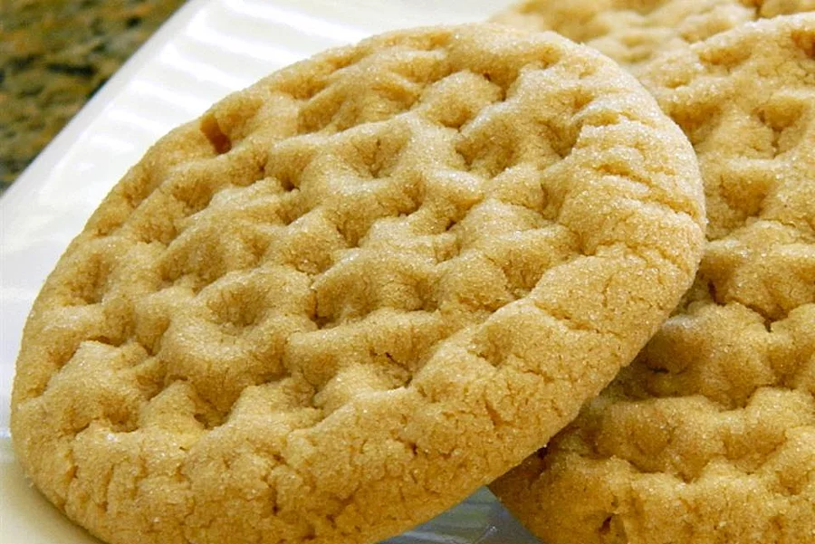

Cookie butter Cookies

Description
I love cookie butter! I was able to find a way to make cookie butter cookies.
I could not find any recipe that used cookie butter, so I am glad I can share this recipe with the world.
Ingredients
- ¾ cup butter, softened
- ¾ cup brown sugar
- ¾ cup white sugar
- ½ cup cookie butter
- ½ cup peanut butter
- 2 cups all-purpose flour
- 1 egg
- ½ teaspoon baking soda
- ½ teaspoon baking powder
- ¼ teaspoon salt
- ⅓ cup white sugar
Steps
-
reheat oven to 350 degrees F (175 degrees C). Line a baking sheet with parchment paper.
-
Beat butter, brown sugar, and 3/4 cup white sugar with an electric mixer in a large bowl until smooth.
Add cookie butter and peanut butter; beat until fluffy.
Mix flour, egg, baking soda, baking powder, and salt into the butter mixture creating a cookie dough.
Roll dough into teaspoon-size balls.
-
Spread 1/3 cup sugar into a shallow dish.
Roll dough balls in the sugar to coat and arrange onto the prepared baking sheet.
Press dough balls with a fork twice to flatten slightly and press a crosshatch shape into the top of the cookies./li>
-
Bake in preheated oven until golden brown, about 12 minutes.
home